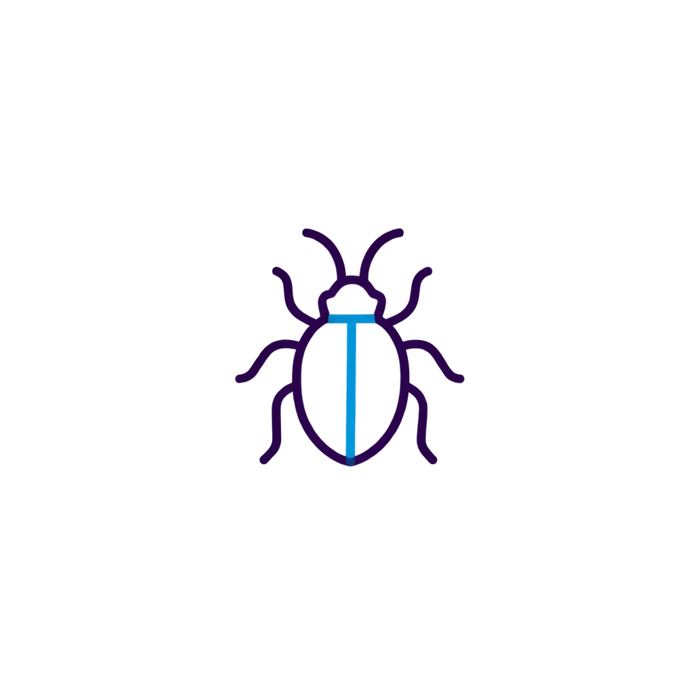
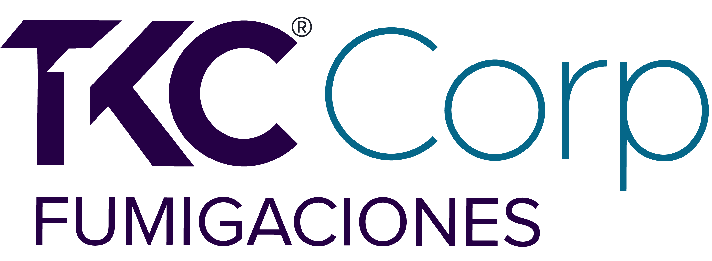
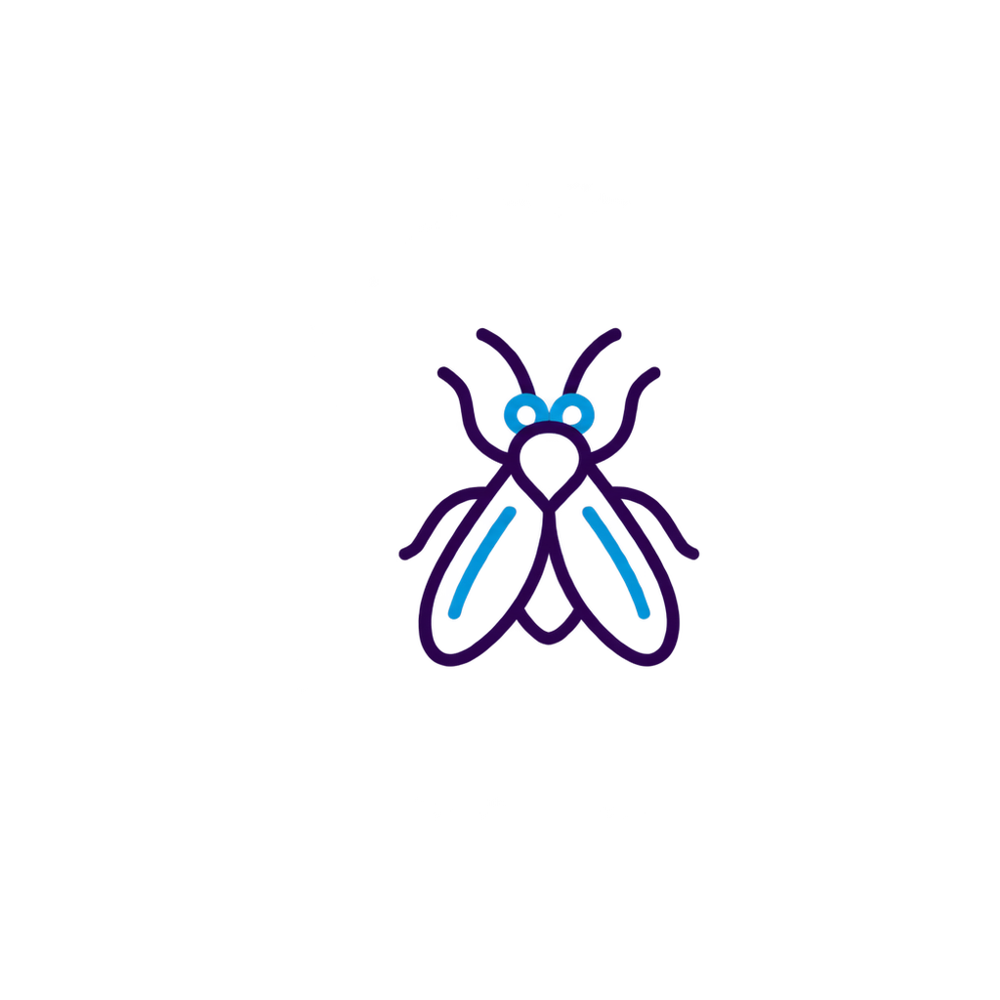
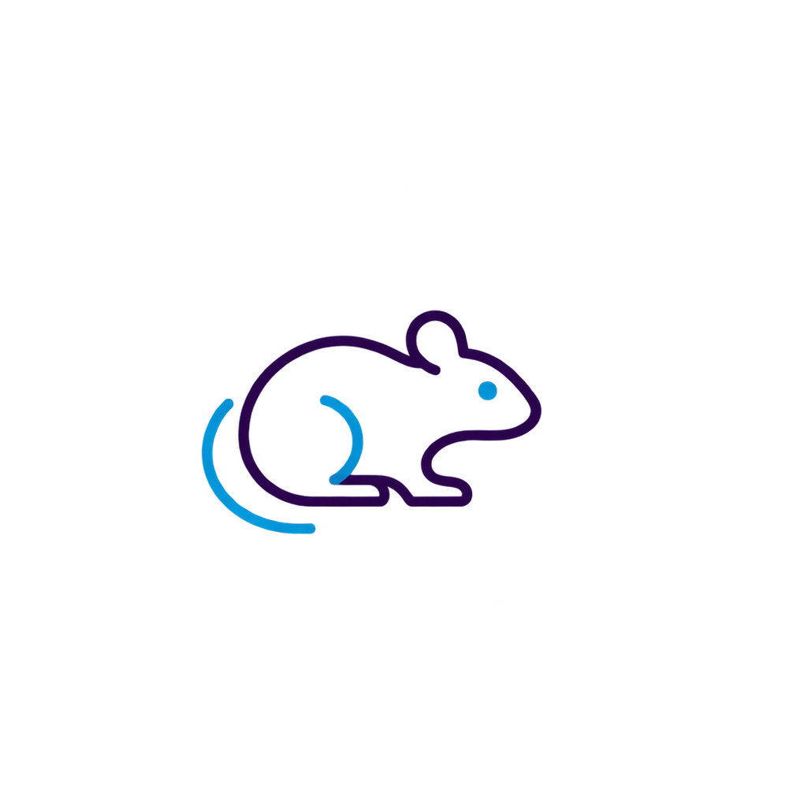
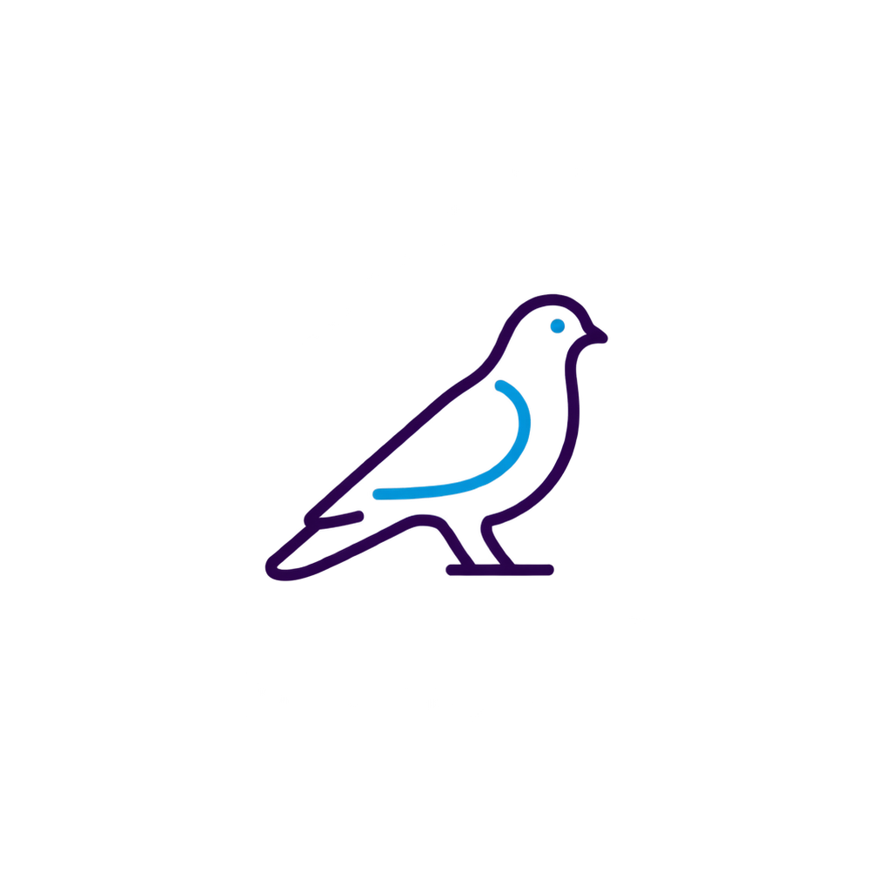

Insectos rastreros
Atendemos la presencia de insectos en zonas de producción, almacenamiento, cocinas, áreas técnicas y otros espacios de la instalación.
Diseñamos soluciones de manejo integrado de plagas para organizaciones que requieren prevención, control y seguimiento en sus instalaciones.
Solicitar asesoría empresarial
TKC Corp integra alternativas de control para atender la presencia de plagas y apoyar las condiciones de saneamiento de cada instalación.
La selección de las acciones depende del tipo de plaga, las características del espacio y las condiciones identificadas durante el diagnóstico.

Atendemos la presencia de insectos en zonas de producción, almacenamiento, cocinas, áreas técnicas y otros espacios de la instalación.

Aplicamos soluciones de manejo y monitoreo para insectos que pueden afectar diferentes áreas de la operación.

Desarrollamos acciones de control y seguimiento para atender actividad de roedores en interiores, exteriores y zonas perimetrales.

Definimos alternativas de manejo orientadas a reducir su presencia en áreas donde puedan generar afectaciones a la operación.
TKC Corp puede complementar el servicio con espacios de formación para fortalecer el conocimiento del personal sobre identificación, prevención y manejo de situaciones relacionadas con plagas.
Solicitar asesoría empresarialConozca cómo estructuramos las intervenciones, desde el diagnóstico y el plan de trabajo hasta la documentación y el acompañamiento correspondiente al servicio.
Conocer cómo trabajamos


Cuéntenos qué está ocurriendo en su instalación y en qué ciudad se encuentra. Nuestro equipo le orientará sobre la solución adecuada.